Un évènement régional annuel destiné à
sensibiliser les collégiennes et les lycéennes aux métiers
du numérique.
L’évènement Numériqu’elles
⬤
◯
◯
Les collégiennes et Lycéennes
Constats et objectifs
Dans les Hauts-de-France, 3 000 emplois numériques sont non pourvus chaque année. Au delà de cet enjeu économique, la parité dans les métiers du numérique et de l'informatique est un enjeu sociétal : en effet, comment imaginer que le monde digital de demain soit conçu uniquement par des hommes, pour les hommes ?
L'objectif de Numériqu'Elles est d'amener les jeunes filles à découvrir et à s’initier aux différents métiers du numérique et de l’informatique, en rencontrant des femmes travaillant dans ces milieux ainsi que des centres de formation dispensant des formations sur le territoire. Ainsi, les collégiennes peuvent décrocher un stage de Troisième et les lycéennes une bourse pour poursuivre leurs études en informatique (initiative portée par IBM).
+ 2000
collégiennes et lycéennes
+ 50
établissements
+ d’égalité femmes/hommes
En démultipliant Numériqu’Elles dans plusieurs sites des Hauts-de-France et d'autres régions, les actrices et acteurs publics et privé.es s'engagent durablement dans la féminisation des métiers du numérique et en faveur de l'égalité femmes/hommes.
Numériqu’Elle: la genèse

Dans le cadre, d’un projet de recherche InserNum, le corif grâce aux financements de la Région et Etat a proposé en 2015 de mettre en place avec IBM une première Edition Numériqu’ELLES en 2015.
Soutenu par l’ETAT DRDFE, la Région HDF, le Départements Numériqu’ELLES se démultiplient sur les HDF.
Notre savoir faire

La première édition de Numériqu’Elles est organisée à Lille, et reprise les années suivantes en associant de nouveaux partenaires tout en perfectionnant l’organisation grâce notamment au questionnaire de satisfaction complété par les élèves.
Chaque année le CORIF se charge de les dépouiller. La découverte des métiers du numérique est appréhendée par des témoignages et des ateliers pratiques dans différents stands.
Partenaire CORIF
⬤
⬤
◯
Présentation
Le Corif est une association qui depuis 30 ans agit en faveur de l’égalité professionnelle et de la mixité, et lutte contre les stéréotypes et les représentations sexistes. Fortement ancrée dans la région Nord-Pas-de-Calais, elle a forgé son expérience sur le terrain au contact de publics très diversifiés, qu’ils soient jeunes (collégiens ou lycéens), femmes, ou professionnels (responsables d’entreprises, institutionnel-les, enseignant-es, formateur-trices, élu-es,…) Ainsi, les collégiennes peuvent décrocher un stage de Troisième et les lycéennes une bourse pour poursuivre leurs études en informatique (initiative portée par IBM).
Expertise
Cette expertise s’articule autour de quatre thématiques :
Ses nombreuses interventions en entreprises, collectivités territoriales, éducation nationale, ou simplement auprès d’individus, lui ont permis de développer une expertise dans le domaine de l’égalité de traitement entre hommes et femmes, reconnue en région mais aussi en France et à l’étranger (Belgique, Italie, Suède, Allemagne, Espagne, Canada….)
L’orientation scolaire
L’égalité citoyenne
L’insertion et l’emploi
L’égalité professionnelle
Le droit à l’image
Le droit à l'image se fonde sur le principe de respect de la vie privée reconnu à toute personne et en particulier au mineur (article 9 du Code civil). Cela signifie que toute diffusion d'une image, d’une vidéo sans le consentement des représentants légaux du mineur est une atteinte à son droit à la vie privée.
Le Corif sollicite l’autorisation d’utiliser des vidéos et des enregistrements pris dans le cadre de l’évènement Numériqu’elles.
Cette autorisation est téléchargeable ci-dessous et, est à fournir avant l’évènement à cette adresse mail : adressemail@gmail.com
Telecharger le documentNos partenaires
⬤
⬤
⬤
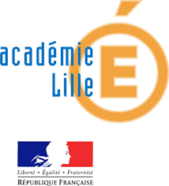
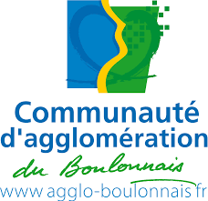

 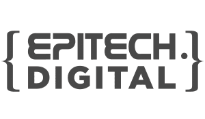
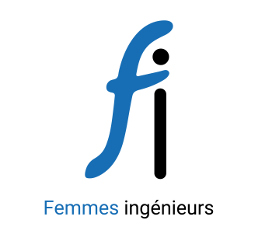
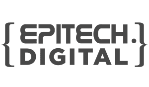
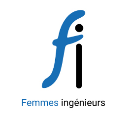
 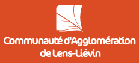
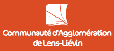
 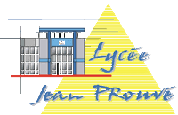
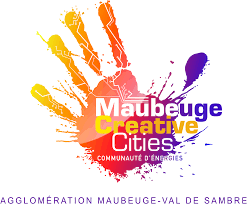
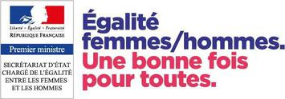
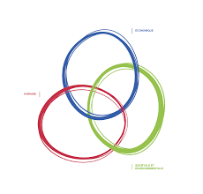
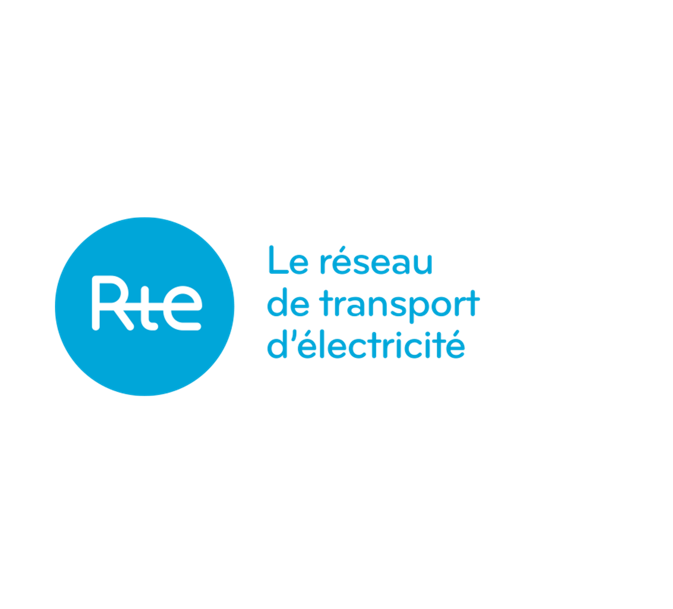
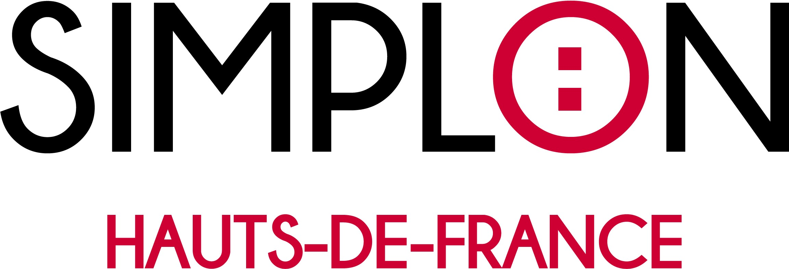
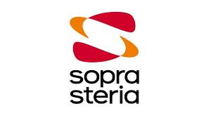
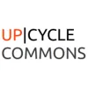
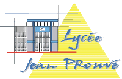
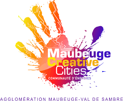
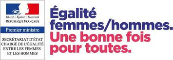
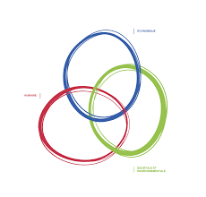
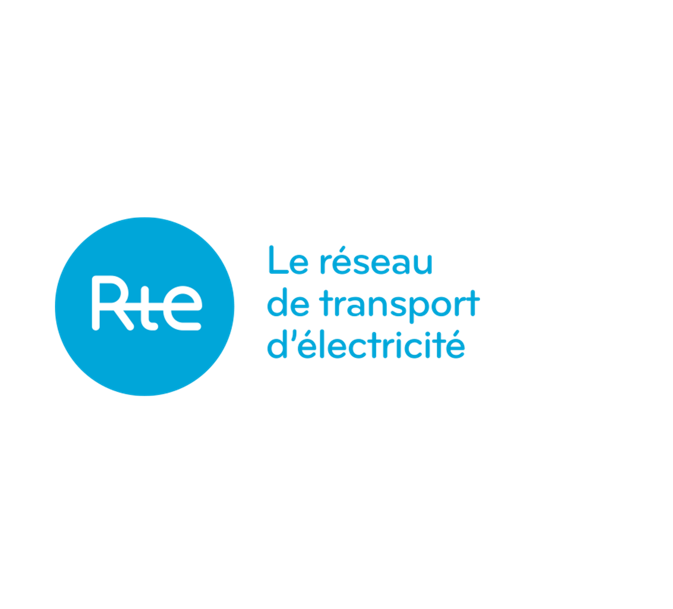
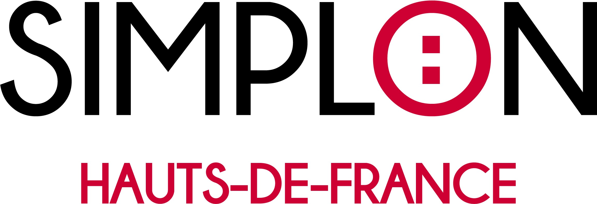
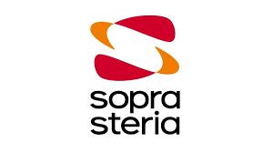
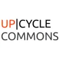
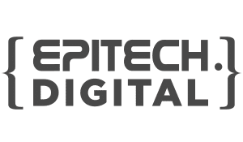
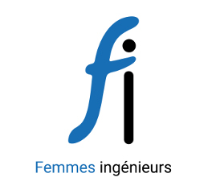
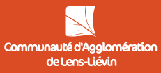